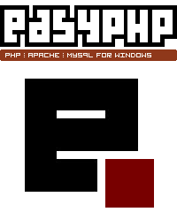

EasyPHP è una piattaforma di sviluppo web di tipo WAMP che permette di far funzionare localmente un server web basato sull’interprete PHP. EasyPHP è un ambiente di sviluppo web completo, che offre un server web Apache, un server di database MySQL, un interprete di script PHP e un amministratore di database MySQL con interfaccia grafica chiamato phpMyAdmin.
EasyPHP non costituisce solamente un'applicazione, bensì un ambiente di sviluppo completo che include un server web Apache, un server di database MySQL, un interprete di script PHP e un gestore di database MySQL con un'interfaccia grafica denominata phpMyAdmin. L'installazione di tutti questi componenti simultaneamente fornisce tutto il necessario per avviare agevolmente lo sviluppo locale di siti web in PHP.
Inoltre EasyPHP dispone di un’interfaccia d’amministrazione che permette di gestire gli utenti, l’avvio e lo spegnimento dei server.E in modo automatico il server Apache crea un dominio virtuale (in modo locale) nell inidirizzo di localhost (http://127.0.0.1)